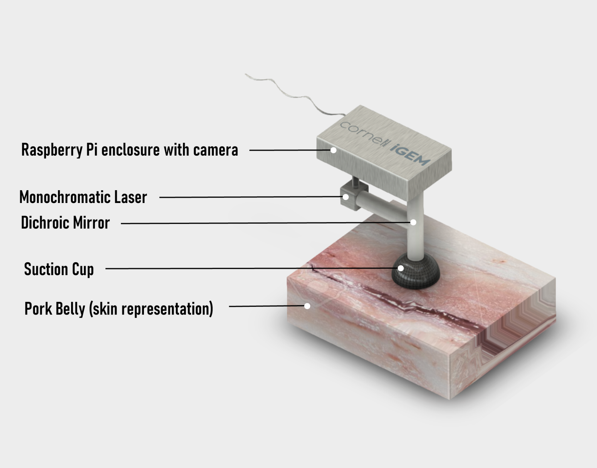
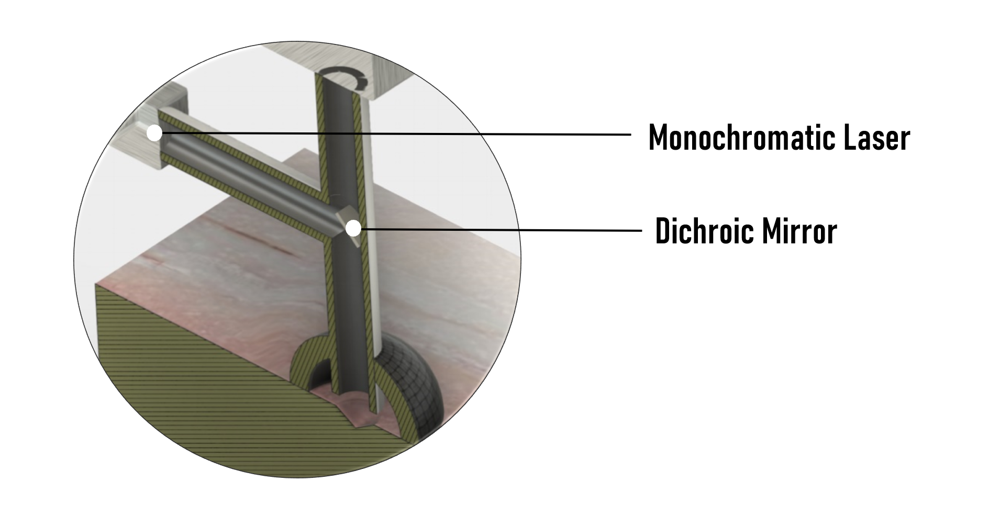
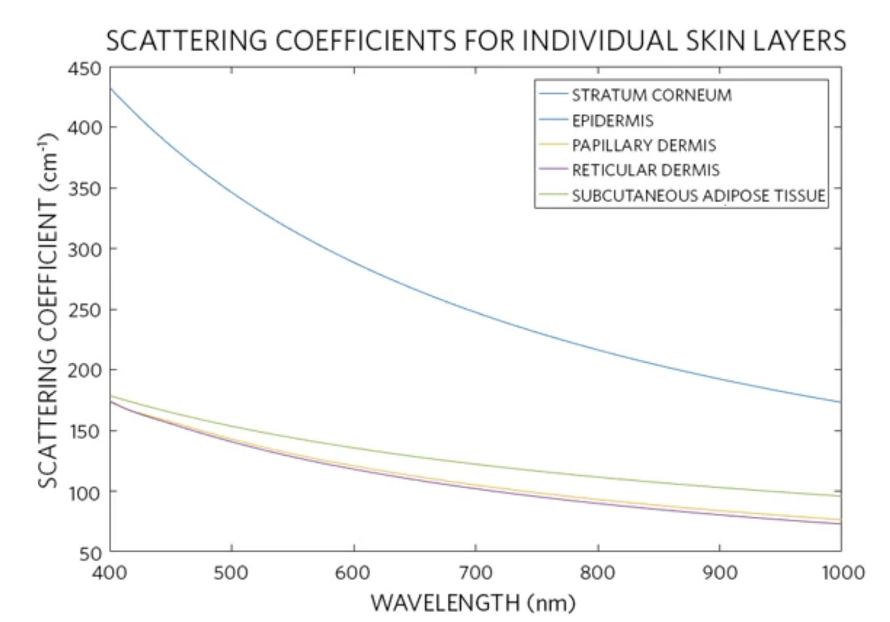
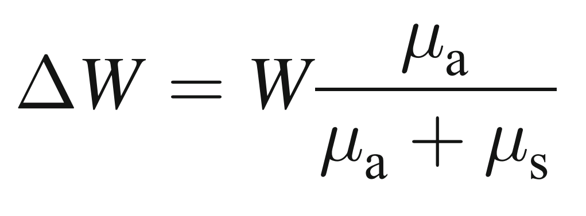
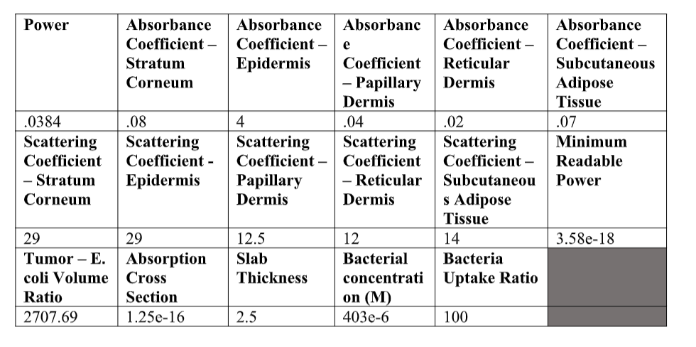
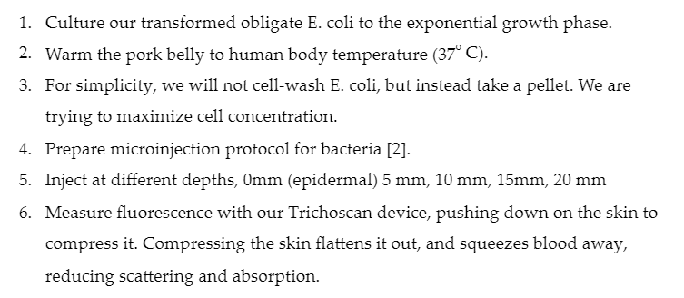
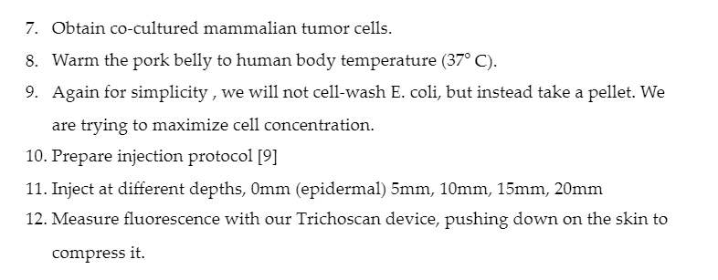
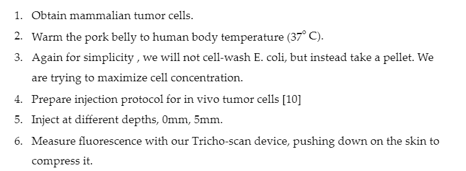

We consolidated various engineering technologies and principles in designing the hardware components of our project. Starting by consulting researchers and scientific papers, we learned methods that could optimize and improve our prototype. We aimed to develop an integrated system that makes it simple to use for our entire customer base. Cornell iGEM’s Tricho-scan system combines our biological components with a hardware implementation that ensures we use the full potential of our bacteria.
Once in the localized tumor environments, the bacteria produce the therapeutic drug, Thrichosanthin. To monitor and examine this bacterial behavior, mCardinal, a red fluorescent protein, was included in the bacteria’s genetic circuit. In healthcare or clinical centers, a fluorescent reader could then be used by medical professionals to detect mCardinal and consequently display the treatment progression. However, we wanted to extend the range of our project to accommodate not only healthcare professionals but patients as well. Medical fluorescent readers for personal use, in this case, seemed unrealistic due to cost and maneuverability. A fluorescent microscope makes up for these aspects, but does not support skin contact application. As such, Tricho-scan, our hardware implementation, displays characteristics of both systems but with emphasis on versatility and cost-effectiveness.
Once in the localized tumor environments, the bacteria produce the therapeutic drug, Thrichosanthin. To monitor and examine this bacterial behavior, mCardinal, a red fluorescent protein, was included in the bacteria’s genetic circuit. In healthcare or clinical centers, a fluorescent reader could then be used by medical professionals to detect mCardinal and consequently display the treatment progression. However, we wanted to extend the range of our project to accommodate not only healthcare professionals but patients as well. Medical fluorescent readers for personal use, in this case, seemed unrealistic due to cost and maneuverability. A fluorescent microscope makes up for these aspects, but does not support skin contact application. As such, Tricho-scan, our hardware implementation, displays characteristics of both systems but with emphasis on versatility and cost-effectiveness.
Our fluorescent detecting system uses a monochromatic laser for fluorescent excitation. mCardinal’s fluorescence emits only after absorbing red light. Therefore, we chose a laser that would only emit mCardinal’s needed excitation wavelength, thus simplifying cost and unneeded complexity. Tricho-scan’s beam of light would then be filtered by a dichroic mirror. The mirror does not require light distributors and reflects light back to the source, creating an efficient optical path and an interference-blocking filter. The area in which the laser beam would contact the skin is enclosed by a suction cup, a feature chosen to prevent excess light interfering with the fluorescent reading. Tricho-scan also features a Raspberry pi and a corresponding Raspberry Pi camera module as the detector. This unit is placed by the monochromatic laser. Regarding the light pathway, if the light is the correct wavelength to excite mCardinal, it will be reflected towards the skin. Light coming from the skin will only pass through to the mirror if it is wavelengths in the emission spectrum of mCardinal. Otherwise, light will be reflected back to the light source.
Tricho-scan was conceptualized to be accessible to all customers. As such, the fluorescent detecting system physical design must be affordable and easily handheld. Thus, the exterior of the device with exception to the suction cup, would be 3D printed with ABS plastic, a light-weight material. Appropriate dimensions of the system would also be allotted based on the size of the dichroic mirrors, laser, and Raspberry pi unit and camera. This unknown factor does not pose a problem to the size of the design, however, because of the system’s simplicity and the components are relatively sized in which a handheld device is possible. After constructing the device, the next step would be testing. In the lab, multiple tests would be run to assess Trico-scan’s function. For example, following necessary precautions, pork, which is the closest animal sample related to human skin, would be injected with the appropriate cancer cells followed by the bacteria containing the therapeutic. Tricho-scan’s reading would be assessed for quality and accuracy. After testing, additional features to the system could be considered, such as further ability to process and interpret readings.
 Fig. 1. The computer-aided design of Cornell iGEM’s fluorescent reader, Tricho-scan and its components.  Fig. 2. A perspective of Tricho-scan’s inner modeled components.
After applying engineering techniques in the design of our hardware, Tricho-scan, we wanted to test the integration of the hardware with biological aspects of our project. However, we faced physical restrictions due to COVID-19. Therefore, instead of physically building our fluorescent reader, Cornell iGEM instead aimed to model one of Tricho-scan’s most important aspects—its maximum readable depth. We started by examining various research papers about topics such as the skin’s properties with regard to light or the effect of the beam wavelength and width.
The skin is composed of five layers with varying thickness: stratum corneum, epidermis, papillary dermis, reticular dermis, and the subcutaneous adipose tissue; the stratum corneum is the top and thinnest layer, while the subcutaneous layer is the lowest and thickest layer.[1] With consideration of these layers and corresponding thicknesses, we began formulating how light would affect them. Two distinctive optical properties arose: the absorption and scattering coefficients. As seen in the figures, these coefficients were specific to the skin layer and beam wavelength.
 Fig. 5. Scattering coefficient of different skin layers calculated in accordance with the presented optical model.[3]
Our approach to determining the maximum readable depth relied on the relationship between the coefficients and weight as well as Beer Lambert’s Law. Equations and calculations were performed in MATLAB. From the absorption and scattering coefficients from each skin layer, we acknowledged the change in weight with the following formula [4]:  Here, ΔW is the change in weight at a ‘collision’ with a tissue particle and μ is the absorption/scattering coefficient respectively. The paper we found this in also lists a max penetration depth given that light particles in their simulation disappear when they are 1/100 of their initial weight. We used this max depth and 1/100 fraction, as well as a μaμa+μsfraction from each layer’s coefficients weighted by layer depth, in order to find a theoretical particle collision density. We then used this particle collision density to find how many collisions would occur for a certain depth into the skin and utilized the weighted equation above (ΔW) to find the fraction of our incident light that will reach each depth. Multiplying this fraction by our incident power of light gives the power of light at each depth.
Following this, we used the ΔW formula again to find the power at the surface of the skin. If this is above the minimum power of light detectable by the human eye, 3.58*10^(-18) W [6], then we counted this as a readable depth.
In addition to this model, we added in a 4% reflection of light immediately on the surface of the skin [4], a 10% loss in light intensity each time light is supposed to be reflected or passed through the dichroic mirror [7], and slightly decreased the light loss fraction for the emitted light because the emitted wavelength passes through skin tissue significantly easier [4].
Then to test its effectiveness, the model was subjected to different light intensities and varying critical inputs. We also later address how different skin properties such as color may not affect the reading as we had originally thought. Because of the physical limitations, we also expand on how our model was constructed based on certain assumptions and how we would begin testing our model.
We created Matlab scripts with the goal of determining the maximum readable depth of our Tricho-scan system, as well as how different factors such as skin tone would affect this depth.
We first calculated the maximum depth Tricho-scan would be able to read at using constants and equations found through our research (outlined in previous sections), and the light power we would be using if we were to build the scanner. For this calculation, we created a Matlab program combining the aforementioned equations and constants to produce our maximum readable depth.
To develop a more comprehensive understanding of our Tricho-scan system, we varied inputs such as the uptake ratio of our engineered E. coli, power of the input light, and absorption/scattering fraction. In particular, varying the fraction allowed us to determine how different skin tones would change maximum readable depth. Most studies we found on the subject reported results based on caucasian male skin. However, darker skin tones, due to increased melanin concentration, naturally absorb and scatter more light. Additionally, aged and female skin tend to scatter less light. To take these variables into account, we calculated maximum readable depth with absorption and scattering values both lower and higher than those found in our research. We then plotted graphs to show the relationships between the varied inputs and maximum readable depth.
Using the parameters, equations, and methods previously described, we modeled the light penetration through the first 5 skin layers. For this calculation, we used the values below:  Our model allowed us to estimate our maximum readable depth to be 20.0723mm. This indicates that our scanner would be able to penetrate through to the deepest layer of skin that we modeled, the subcutaneous adipose tissue, which spans 2.1mm to 5.1mm in the skin. While a maximum readable depth of 20.0723mm would not necessarily allow Tricho-scan to cover the range of tissue where breast cancer tumors could appear, factors such as scanning in a light-sealed environment could increase accuracy of readings at larger depths. This is due to both less interference from external light sources and because the minimum readable light intensity would be at a lower threshold. Such evidence suggests that our Tricho-scan system has potential for improvement in terms of maximum readable depth.
To better understand the effects that variance in light source would have on our scanner, we calculated maximum readable depth at different light intensities. When used in a home setting as intended, power of the laser might be compromised, so it is important to understand how this might change Tricho-scan’s efficacy.
 We can note that light power and maximum readable depth follow a logarithmic relationship, with depth decreasing as power decreases. This indicates that increasing power level would not significantly increase penetration depth. Safety must also be considered when using the laser on human skin, hence the value we used that slightly limits readable depth. Our results also indicate that any decreases in light intensity past 10mW would significantly impact the scanner’s maximum readable depth.
We can note that light power and maximum readable depth follow a logarithmic relationship, with depth decreasing as power decreases. This indicates that increasing power level would not significantly increase penetration depth. Safety must also be considered when using the laser on human skin, hence the value we used that slightly limits readable depth. Our results also indicate that any decreases in light intensity past 10mW would significantly impact the scanner’s maximum readable depth.
We also hoped to understand how diverse skin types might affect the maximum penetration depth of the scanner. Most studies used only caucasian male skin to determine the absorption and scattering constants we used.

 By varying the constants, we determined that increased and decreased absorption and scattering levels in different skin tones would not affect the maximum readable depth of our scanner. By testing variances in scattering and absorption separately, we can note that changes in these factors also would not affect Tricho-scan’s efficacy.
By varying the constants, we determined that increased and decreased absorption and scattering levels in different skin tones would not affect the maximum readable depth of our scanner. By testing variances in scattering and absorption separately, we can note that changes in these factors also would not affect Tricho-scan’s efficacy.
Additionally, knowing that our engineered bacteria might be absorbed differently based on a large number of unpredictable factors, we aimed to better understand the effect of the bacteria uptake ratio by cells on the maximum readable depth of Tricho-scan. Note that fewer bacteria will result in decreased fluorescence because less mCardinal protein will be produced.
 Bacteria uptake ratio and readable depth share a logarithmic relationship. This indicates that pursuing higher bacterial uptake ratios past a certain threshold would not greatly increase maximum readable depth.
Bacteria uptake ratio and readable depth share a logarithmic relationship. This indicates that pursuing higher bacterial uptake ratios past a certain threshold would not greatly increase maximum readable depth.
These results indicate that it would be difficult to significantly increase readable depth. This could be a limitation of our model in that it focuses on logarithmic relationships and could become inaccurate at significantly higher/lower values. If it is not the inaccurate assumptions in our model, then this limitation could be due to the inherent properties of skin. We hope to test our product and redefine any incorrect parameters in order to find the true relationships between each factor.
Our modeling is based on several assumptions that could lead to slightly inaccurate results. Although we took scattering and absorption coefficients found from research, as explained previously, we then weighted them by the depth of each layer and used them to find a theoretical average particle collision density using max penetration depth equations from research papers (also explained previously). By doing this, we assumed that the coefficients are consistent throughout each individual layer, that we could estimate by assuming our theoretical particle collision density is constant, and that we could then extrapolate this same collision density deeper into the skin. Clearly, skin is not uniform and layers vary significantly, so weighting layers by depth and then extrapolating that deeper most likely does not give a completely accurate result of reading at deep layers.
We also assumed a 4% light reflection incident on the skin and after taking that into account, we only focused on scattering and absorption. Without measurements, this initial reflection percentage could be variable and inaccurate. All other constants from papers could have variation, though the model itself does not cause the inaccuracies due to those. Although the model does make its own assumptions, it provides a useful frame of reference for measurements. In the future, after building a prototype, we could run trials in order to create more accurate plots.
Lastly, we only account for the light from the laser, to the fluorescent proteins. Poor tolerances in manufacturing the device or imperfect use of the device could lead to light leakage.
We would simulate human skin with a square cut of shaved pork belly, and inject our cells into the tissue at various depths. We calculate the average bacteria cell count per tumor to be 4.64x10 11 bacteria, or 441 mg wet weight of bacteria, based on estimated cell and tumor size and density [8].
According to our models, reducing the bacteria count by a factor of 100 would decrease the depth of reading by 2.5mm. We would weigh out 4.41 mg of bacteria, mix in 10uL of saline solution. First we would test the readability of just our fluorescent bacteria. Our process would be as follows:

Next we would test the cultured mammalian cells that have been co-cultured with E. coli. This tests the efficiency of E. coli growth with cultured mammalian cells in co-culture.

Last we would test cultured mammalian cells without E. coli, and a control with nothing injected. We do not expect any signal from non-transformed E. coli and thus would not test it.

 Once we obtain relative fluorescence data, we can mathematically match our data to our model to calibrate our device.
Once we obtain relative fluorescence data, we can mathematically match our data to our model to calibrate our device.
[1] (2018, March 30). Penetration Depth Guide For Biosensor Applications. Retrieved from https://www.maximintegrated.com/en/design/technical-documents/app-notes/6/6433.html
[2] “Penetration Depth Guide For Biosensor Applications,” 2018
[3] “Penetration Depth Guide For Biosensor Applications,” 2018
[4] Ash, C., Dubec, M., Donne, K., & Bashford, T. (2017). Effect of wavelength and beam width on penetration in light-tissue interaction using computational methods. Lasers in Medical Science, 32(8), 1909-1918. doi:10.1007/s10103-017-2317-4
[5] Ash, C., Dubec, M., Donne, K., & Bashford, T, 2017
[6] Power of Light - Chapter 2 - Light Measurement Tutorial | ILT. (2020). Retrieved 13 October 2020, from https://www.intl-lighttech.com/chapter-2-power-light-ilt-light-measurement-tutorial
[7] 45° Red Dichroic Filter Mounted in C-Mount Cube | Edmund Optics. (2020). Retrieved 18 October 2020, from https://www.edmundoptics.com/p/45deg-red-dichroic-filter-mounted-in-c-mount-cube/10195/
[8] F. Azam, T., LR. Bakken, R., Bowden, W., Bratbak, G., G. Bratbak, I., T. Fenchel, B., . . . SW. Watson, T. (1983, January 01). On the relation between dry matter and volume of bacteria. Retrieved October 10, 2020, from https://link.springer.com/article/10.1007/BF02011246
[9] Benard, E. L., Sar, A. M., Ellett, F., Lieschke, G. J., Spaink, H. P., & Meijer, A. H. (2012). Infection of Zebrafish Embryos with Intracellular Bacterial Pathogens. Journal of Visualized Experiments, (61). doi:10.3791/3781
[10] Carlson, B. L., Pokorny, J. L., Schroeder, M. A., & Sarkaria, J. N. (2011). Establishment, Maintenance, and In Vitro and In Vivo Applications of Primary Human Glioblastoma Multiforme (GBM) Xenograft Models for Translational Biology Studies and Drug Discovery. Current Protocols in Pharmacology, 52(1). doi:10.1002/0471141755.ph1416s52